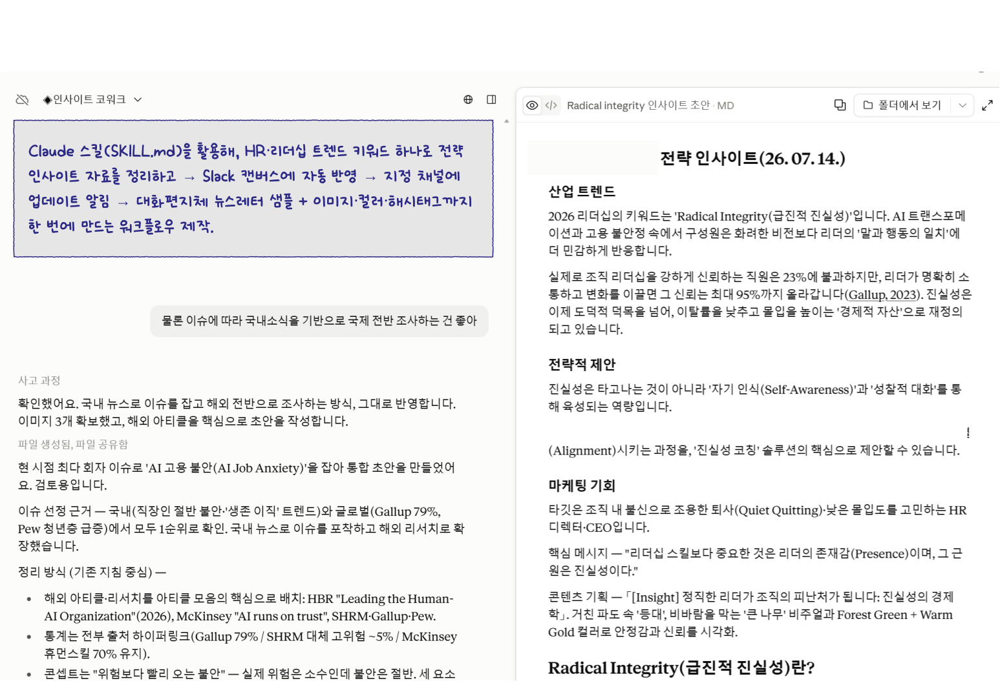

키워드 하나로 HR 인사이트 워크플로우 설계

WORKFLOWHR·리더십 키워드 하나를 입력하면 정리된 인사이트 자료를 산출해 → Slack의 팀 Canvas 반영 → 지정 채널 메시지 알림으로 이어지는 워크플로우를 자동화
반복되는 리서치·구조화·Slack 공유·콘텐츠 활용 제안을 재사용 가능한 스킬로 결과 편차를 줄이고 팀내 신속하게 전달할 수 있을까?
팀에서 만드는 콘텐츠가 많다보니 마케터도 늘 일이 많고 디자이너인 저도 일이 많아 양질의 콘텐츠 발굴을 위한 소스를 보다 잘 정리하고 공유하는 것이 중요한데 그 역할을 할 여력이 있는 사람이 없었음.
• 실제 필요한 분야의 키워드를 던지고 실전 테스트
• HBR·Gallup·McKinsey 등 신뢰성 높은 아티클과 검증된 통계만 수집
• 강조 부호 제거, 통계 옆 출처 하이퍼링크, 검색결과 URL 금지 등 작성 규칙 고정
• 최신 항목이 Slack Canvas 맨 위에 쌓이도록 반영하고 승인 후 채널 알림 발송
• CANVAS_ID·NOTIFY_CHANNEL·ORG_NAME·SIGNATURE 등 개인·조직 값을 설정 파라미터로 분리, insight-cowork SKILL.md로 문서화·패키징
검색결과 페이지 URL은 문단의 근거로 쓰기에 부정확한 이슈 발생. 캔버스 ID·채널·발신 명의를 하드코딩하면 보안과 재사용성이 다소 떨어짐.
Canvas 반영 전 현재 section_id를 읽고 실행 후 다시 검증하는 절차를 넣었습니다. 검색결과가 아니라 문단 주장과 가장 맞는 특정 아티클을 인라인 출처로 배치했고, 개인·조직 값은 설정값으로 분리했습니다. 캔버스 반영과 알림은 반드시 초안 승인 뒤 실행하도록 규칙화했습니다.
도구는 문서 설명보다 실제 실행 결과를 재검증해야 했습니다.
✔️Unsplash 이미지 소스 검색 링크에서 특정 사진 URL을 확정하는 로직 고도화
✔️협업자에게 좀더 도움되고 재생산 가능한 자료로 만들어내는 데 도움될 포맷까지
확장